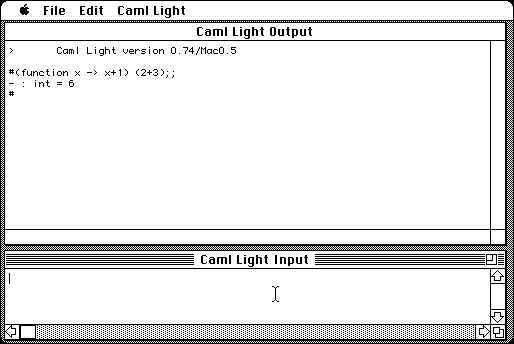

Download
cl74mac05bin.zip (614K) Caml Light 0.74/Mac0.5 repackaged into a zipped hfs disk image and checksum file. The disk image can be mounted with Mini vMac.
cl74mac05bin.sea.bin (680K) Caml Light 0.74/Mac0.5 in the original format.cl74man.zip (176K) Caml Light Tutorial and Reference Manual repackaged into a zipped hfs disk image and checksum file. The disk image can be mounted with Mini vMac.
cl74refman.txt (221K) Caml Light Tutorial in the original format.
cl74tutorial.txt (406K) Caml Light Reference Manual in the original format.cl74mac05src.zip (582K) Caml Light 0.74/Mac0.5 source repackaged into a zipped hfs disk image and checksum file. The disk image can be mounted with Mini vMac.
cl74mac05src.sea.bin (1.2M) Caml Light 0.74/Mac0.5 source in the original format.
copyright: INRIA
mod date: Dec 22, 1997
license: free for non-commercial use
from url :
The Caml Language
"Small, portable implmentation of the ML language". For "System 6 or 7". Source code is available. By Xavier Leroy, Damien Doligez, Arnaud Vandame, and Pierre Weis.

If you find these downloads useful, please consider helping the Gryphel Project, which hosts them.
Here are the md5 checksums for the downloads, signed with Gryphel Key 5:
--------- GRY SIGNED TEXT --------- fecdd402f850a3507383cab1a755e31b cl74mac05bin.zip 5fbbc754c87998609d95091672d25a24 cl74mac05bin.sea.bin b2fc949a958320cef85ad8bc24d676a8 cl74man.zip 457bb0603f22240b5564a3b6b8e82a75 cl74refman.txt edd4aecb3808d8566f7ab87a683656aa cl74tutorial.txt 81b2703ded081d59076925004fb1850d cl74mac05src.zip ebb1572f35e9cf92086f27c7b0e3a174 cl74mac05src.sea.bin ------- BEGIN GRY SIGNATURE ------- Gry/4Xa8CFcUzxdN/LYdDiEYsyKI+BB/KXghcl45vLj1wnckGng3ychLhaVg/i1w p8LA/t1SC3mhPDkg8k8gFo6VcHhTjJSnNUTyByDklWrqTjkwwSumUVzKq5CqsNFi kqDO3hhCGJz6QvGh/wVwsP6nvwSZ2UCAQ/Ki1ZlJWFBr5sjDO0itFxGNezzOuahi -------- END GRY SIGNATURE --------